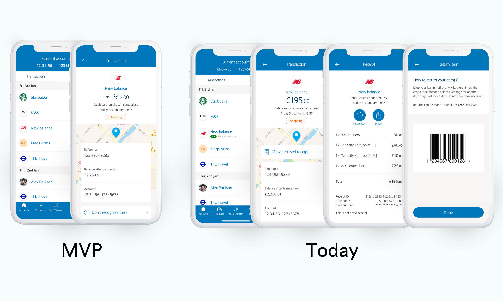
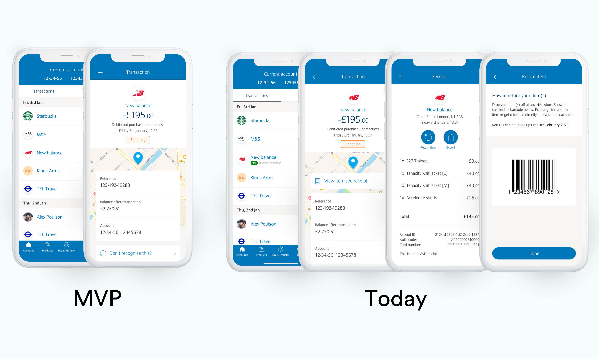

🚀 Sprint
5 days of intense learning, thinking, ideating, building and testing. It includes a range of roles aiming to solve one problem statement.


Reduce phone calls and branch visits by 20% YoY.
9% of all phonecalls are customers calling to check that fraud hasn't been commited on their account. These calls are categorised as unrecognised transaction.
40% of them are fraudulent, 60% is because the transactional data is difficult to understand and it was them who made the purchase.
Skybranch monthly analytics
Customer complaints forum
Branch colleague during field research
My thinking was to organise and facilitate a GV Design Sprint, a tried and tested method in solving complex problems, quickly. Before it started, I wanted to get the product owner and myself to answer these questions.
Transactional data is really poor. Customers aren't able to understand them, resulting in lots of call centre and branch staff time.
Customers tapping on transactions, seeing returns done digitally and numbers of shops printintg receipts go down.
Easy to understand and feel confident when viewing your transactions.
Fewer calls tagged with 'unrecognised transaction.'' NPS to rise because of clearer data less app store reviews about bad transactional data.
From this, we can create a HMW as the overarching challenge for the sprint team.
5 days of intense learning, thinking, ideating, building and testing. It includes a range of roles aiming to solve one problem statement.

Why can’t a customer tap on that £82.97 payment made at John Lewis and see that it was a jumper, Google mini and chopping board?
We could start by partnering with our corporate clients like John Lewis and it would be a win for them, Barclays and the customer.
So I took the concept and started to design the UI/UX to put into customer testing.

We first conducted guerrilla research within our branches with customers to see if the concept worked.
Once confirmed, we conducted a series of usability tests to ensure that the experience itself worked, and iterated after coming across major findings.

Customer feedback
With this needing quite a large engineering effort, the product owner and I sat down together to create a business case.
Saves businesses money having to print receipts, the majority of which are impossible to recycle due to them containing the same chemicals used in single-use plastic.
If Barclays can see detailed transactional data, we can possibly profit from it. If it's a flight to Spain, why not surface live foreign currency rates, or use it as a timely reminder to get travel insurance
If you lose a receipt, most places won't allow you to return your product. Some will if bought online, but many don't as there is no proof of purchase. This would help banks with the thousands of credit disputes they receive yearly.
It's a great feature for Barclays' business customers. Many business owners rely on receipts as part of their end of year taxes. They are required by law to keep them for a number of years, resulting in taking up office space and being overwhelming to manage.

Once a fully backed project, myself and the product owner began by engaging engineering and created a release roadmap including an MVP for beta launch.
The project was showcased to the wider digital department and the design team, we typically use design critiques to share early projects, to see if there are any connections with other projects and get general colleague feedback.
 

Before pushing live, We wanted to test the functionality even further, so decided to use Barclays Launchpad, which is a beta app available to ~50,000 Barclays customers.
It allows them to provide direct feedback and we track feature usage with embedded analytics. We also ran an A/B test for a couple of very small differences to make sure that we had the best design.


After a succesful beta launch, digital receipts is now available to all Barclays customers.
Skybranch monthly analytics